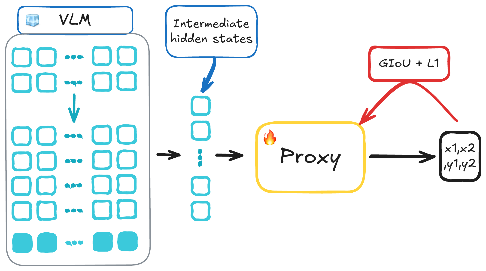
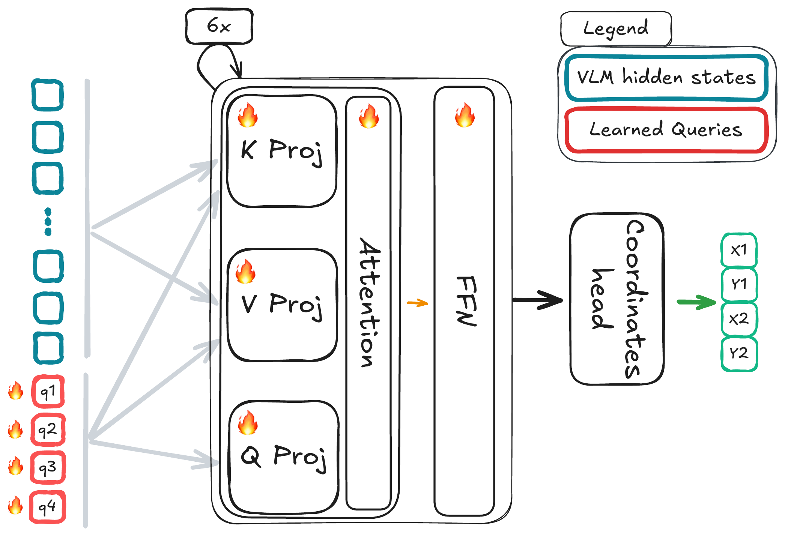
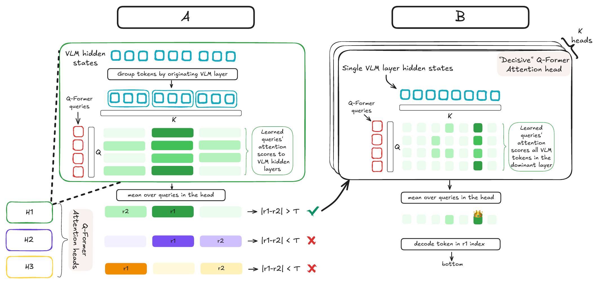

Vision-Language Models (VLMs) are increasingly utilized as the conditioning backbone for diffusion-based image editing due to their remarkable multimodal reasoning capabilities. While standalone VLMs demonstrate strong localization capabilities, editing pipelines frequently struggle to maintain this accuracy, particularly in complex, multi-entity scenes. In this work, we investigate this performance gap, hypothesizing that it stems from treating the VLM as a condition encoder. In this role, the model is restricted to a single forward pass, preventing the autoregressive generation process for which it was optimized, thereby failing to fully expose its capabilities. To investigate whether this spatial understanding persists when the VLM is used as a condition encoder, we introduce Analysis-by-Proxy. In this framework, we train a lightweight, interpretable proxy model on the VLM's intermediate representations using an auxiliary localization task. By analyzing the VLM through this proxy, we uncover the specific VLM representations that encode localization information. Our findings expose a fundamental mismatch between how spatial knowledge is represented within a VLM condition encoder and how it is extracted by current editing pipelines. We reveal that under single-pass constraints, the localization signal does not reliably propagate to the predefined layer configurations commonly used for conditioning. Instead, this crucial signal remains hidden within intermediate representations, at locations that vary depending on the input prompt. Using our introduced Analysis-by-Proxy framework, we reveal the fundamental failures of existing condition extraction strategies in editing pipelines, opening the door to more principled design of conditioning architectures.


The proxy is a small transformer with learned queries that cross-attend to the VLM hidden states, followed by a coordinates head that regresses the bounding box.

Probing the VLM through the proxy, we trace where localization information lives inside the condition encoder. We find that, under single-pass constraints, the signal does not reliably reach the predefined layer configurations commonly tapped for conditioning. Instead it remains hidden within intermediate representations, at locations that vary depending on the input prompt — exposing why current condition-extraction strategies lose spatial accuracy in complex, multi-entity scenes.
@inproceedings{baron2026analysisbyproxy,
title = {Analysis-by-Proxy: Localization Signals in VLMs Operating as Condition Encoders},
author = {Baron, Yoav and Dorfman, Sara and Paiss, Roni and Cohen-Or, Daniel and Patashnik, Or},
booktitle = {ICML 2026 Workshop on Mechanistic Interpretability},
year = {2026}
}